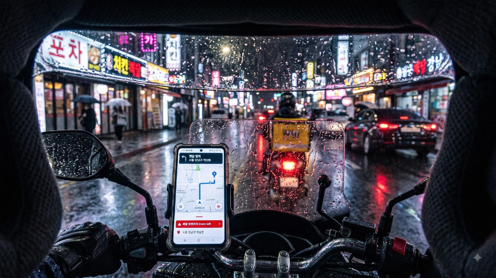

CHAPTER 2 · AI 시대의 루프
현실의 루프
같은 루프를 라이더의 자리에서
알고리즘이
비현실적인 배달 시간
을 제시한다 — 폭우도, 고장 난 엘리베이터도 알고리즘은 모른다
거부하면?
수락률
이 떨어진다 → 콜이 끊긴다 → 소득이 끊긴다
형식적으로는 in-the-loop 다 — 수락 버튼은 노동자가 누르니까
그러나 페트로프에게 있던 것 —
불이익 없이 판정을 뒤집을 권한
— 이 라이더에게는 없다
노동자는 루프의 감독자가 아니라
루프의 충격 완충재(Shock Absorber)
가 되었다
연출 이미지 (AI 생성)